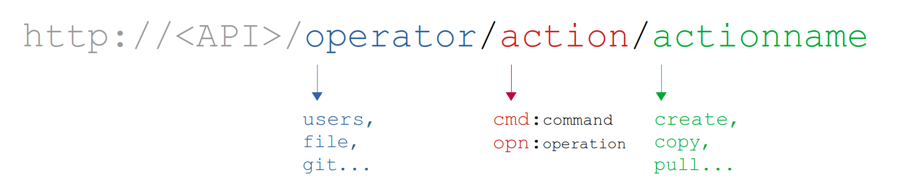

Overview#
The purpose of this API is to perform (customisable) "actions" onto a remote HPC cluster. There are 2 types of possible actions: commands and operations:
- Command: a single, atomic shell command such as
cp a.txt b.txt - Operation: a more complex action that could consist in several commands followed by some logic, such as taking the ouput of the first command, processing it and feeding into stdin of the second command.
Both actions can belong to a specific operator: a group of commands and operations that have common utility.
All endpoints implementing commands and operations follow this structure:

All API communcation is done via JSON format.
All operators are defined in
src/operatorsin the source code. Check the reference for more information
Commands#
Three types of HTTP requests are available for a command:
GET {API}/{operator}/commands#
Lists all the supported commands for the given {operator}
GET {API}/{operator}/cmd/:{command}#
Fetches a single {command} info and supported options for the given {operator}
POST {API}/{operator}/cmd/:{command}#
Runs the actual command. Allowed options (flags) can be defined in the POST body. Note that not all flags of a specific command might be available: a command definition in the API might choose to filter out some options.
{
"input": "input",
"option1": "value",
"option2": "value",
...
}
Note: input = stdin. Arguments of commands are always taken from the input field for the submitted POST request body.
Operations#
Three types of HTTP requests are available for an operation:
GET {API}/{operator}/operations#
Lists all the supported operaions for the given {operator}
GET {API}/{operator}/opn/:{operation}#
Fetches a single {operation} info and supported options for the given {operator}
POST {API}/{operator}/opn/:{operation}#
Runs the actual operation. Options can be defined in the POST body in the same way as commands:
{
"option1": "value",
"option2": "value",
"option3": "value",
...
}
Supported operations with options are defined via JavaScript files named after the operation. All operations for a given operator are defined in operators/{operator}/operations/{myOperation}.js in the source code.